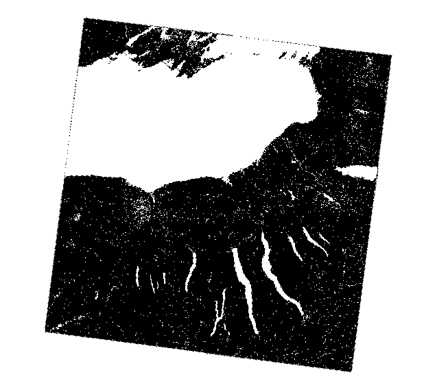
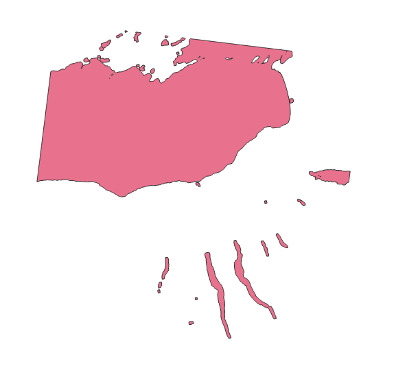
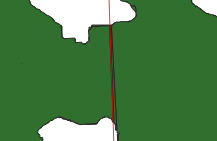

Extracting the Great Lakes from Landsat Satellite Imagery
For this study we will be using Band 5 of the landsat 8 and 9 dataset which you can download here. Ensure that you download data that has no, or very little cloud coverage i.e. cloud coverage < 1%. Ensure that you download enough data to cover all the lakes fully. You will only need Band 5, which in my case was ~2GB all images. The images you download should have the a name similar to:
LC08_L1TP_016030_20251006_20251115_02_T1_B5.TIF
Note data file name must contain _B5.TIF and start with either LC08 or LC09. If you chose LC08 make sure all files start with LC08. Same if you choose LC09. You will need to make an account to download this data.
You can open the data in to get something that looks like this:

Why Band 5?
Band 5 in the Landsat 8 and 9 represents the near infrared band of the elecrtomagnetic spectrum. Near infrared is strongly absorbed and poorly reflectly by water. This means water will appear very dark in infrared images as you can see in the image above. We can exploit this property to determine there is water in the photo.
Extracting water
We will start by using the indentifying tool and clicking at different spots in the raster photo to find the values. Here we are trying to determine what the cut off is for water and land. On average I get water to be ~6000, with parts of the water going up to ~9000. I found that the darkest parts of land sits a little over 10000. With this knowledge we can create a cutoff for where there is land and where there is water. I will say that anything below 10000 is water, anything above is land, it might be different for you. After we determine a threshold, we can remove anything that isn't water by using a raster calculator. For the purpose of this study we will be using Whitebox Workflow's raster calculator, developed by John Lindsay The command for the raster calculator with a threshold of 10000 can be writen as followed, where "'raster'" can be any word and "[raster]" is the raster image read in from by the program from the command wbe.read_raster():
raster = wbe.raster_calculator('raster' < 10000", [raster])
Note that we are using this raster calculator rather than QGIS built in one as Whitebox Workflows has a Python API that we will be using for this study. Whitebox Workflows keeps calculated rasters in memory, so when we want to use multiple tools it will be faster to do it this way.
Converting to Vector
Now that we have extracted the water, it is time to move convert our rasters to vectors. We do this so that we can combine our data much easier using the Union processing tool. However, Union can be quite a taxing tool on our computer if there are too many polygons, so we start by reducing the number of polygons that would be generated by our rasters by using the Opening tool. This tool works by remove x number of pixels outside the paremeter of all shapes in the raster image, which will remove a lot of smaller shapes while keeing the larger shapes relativly intact. The Opening tool has two values, one for x, one for y. I suggest you keep them the same for this study.
raster = wbe.opening(raster, 40, 40)
Note that for this study I will be using an opening value of 40 since I am on a relativly low end laptop for this study. If you want more accuracy and are running on a higher end computer you can use a lower opening value or skip using opening all together. Just note that Union will take longer with lower opening values
Now we can convert the raster to vector. We can do this using the wbe.raster_to_vector_polygons tool. This takes just one value which is the raster. From this tool you should receive a vector image similar to the following.
vector = wbe.raster_to_vector_polygons(raster)

Creating a script
We can automate the previous commands for all rasters by using the Whitebox Workflows for Python. You can install this using pip install whitebox-workflows.
The following code will read in raster files from /directory_of_python_file/data/B5/ then on each raster it will apply the raster calculator, opening, and raster to vector polygons tools.
Finally it will write out the vectors to /directory_of_python_file/.
Important: If you are on Windows, you will have to change all paths to use '\' instead of '/'.
If you are on Linux you will need create a virtual environment before you can install whitebox-workflows using pip. See this for how to setup a virtual environment.
import os
from whitebox_workflows import WbEnvironment
wbe = WbEnvironment()
try:
wbe.working_directory = 'data'
wbe.verbose = False
# Read in rasters
path = rf'{wbe.working_directory}/B5'
rasters = []
raster_names = []
for file_name in os.listdir(path):
print(file_name)
raster_names.append(file_name)
rasters.append(wbe.read_raster(rf'{path}/{file_name}'))
count = len(rasters)
print(rf'Count: {count}')
# For each raster
for i, raster in enumerate(rasters):
print(f'{i}/{count}')
# Extract Water
raster = wbe.raster_calculator("'raster' < 10000", [raster])
# Opening to simplify data
raster = wbe.opening(raster, 40, 40)
# Converting Raster to Vector
vector = wbe.raster_to_vector_polygons(raster)
# Write out raster
wbe.write_vector(vector, rf"{raster_names[i]}.shp")
except Exception as e:
print(e)
Once this is done running, ~10 minutes on my system, you can place the photos into QGIS to make the following photo:

Fixing the vectors
The shape files we receive from the code may have some errors associated with them. You can check what type of error is associated with your shapefiles by using the under the vector geometry processing tool. This tool will create two shape files, one for valid, the other for invalid. You can open the attribute table of the invalid shapefile to see what type of error your shapefile has. In my case, I have the ring self-intersection error. This error can be fixed by giving a buffer to every shapefile. For this we will need another script. The following script takes all active layers in Qgis and adds default 10m buffer to each of them:
from qgis.core import QgsProject
from qgis import processing
for layer in QgsProject.instance().mapLayers().values():
params = {
'INPUT': f'/directory_to_data/{layer.name()}.shp',
'DISTANCE':10,
'SEGMENTS':5,
'END_CAP_STYLE':0,
'JOIN_STYLE':0,
'MITER_LIMIT':2,
'DISSOLVE':False,
'SEPARATE_DISJOINT':False,
'OUTPUT': f'/directory_to_data/data/buffered/buffered_{layer.name()}.shp'
}
processing.run("native:buffer", params)
To run this script first place all the shapefiles into layers of Qgis. Then in plugins -> Python Console -> Show Editor (Paper with Pencil on the Top) -> Open Script, open the file from above. Make sure you change 'directory_to_data' to be the directory to your shapefiles. Once all is set, press the green arrow on top to run the script
Unionizing the Vectors
We are now ready to unionize the vectors. Move all Shapefiles from the buffered folder into Layers, then in the tool select all layers, set an output layer, and run. The output should give an image similar to this:

Splitting Lake Huron and Lake Michigan
Lake Huron and Lake Michigan are usually split by the Mackinac Bridge. This bridge was too small to split automatically when we ran wbe.raster_calculator, so we will need to split it manually. Unfortunatly this is quite a nucance to do. To start we will need to start by using the . We can accessing this toolbar by going to View -> Toolbars -> and clicking it on. Once added, you can select the unioned layer, and click (the pencil) under the Vector Toolbar. Then click the (The scissors splitting the polygons) in the Advanced Digitizing Toolbar and split the Mackinac Bridge Similar to how I've done it below. (Left click to add points, Right click to confirm split)
Note: You may have some data in Lake Michigan that for some reason is connected to Lake Huron polygon after the split, and vice versa. To fix this you can merge those specific parts with the Lake Michigan polygon using (2 left of Split Features). Once you merge you can then re-split the Polygons to fix the issue.
You may still have left over residue after the split and the merge, you can remove this manually by using (5 left of Delete Part)
Dissolving the Lakes
Currently our lakes are divided up by where the satellites happened to take the its images, however we would like it to be divided by the lake perimeter. We can solve this issue by dissolving the polygons of a given lake together. Start by selecting the all the polygons for the lake you want to dissolve, like I have done below. Once selected you can run the tool and make sure you have and selected and Run.

Repeat this step for the other lakes, and any other lakes you want to add. After you should have something similar to the following image:

The Great Lakes
Lastly Combine the Great Lakes together using .

Creating the attribute table
back
back